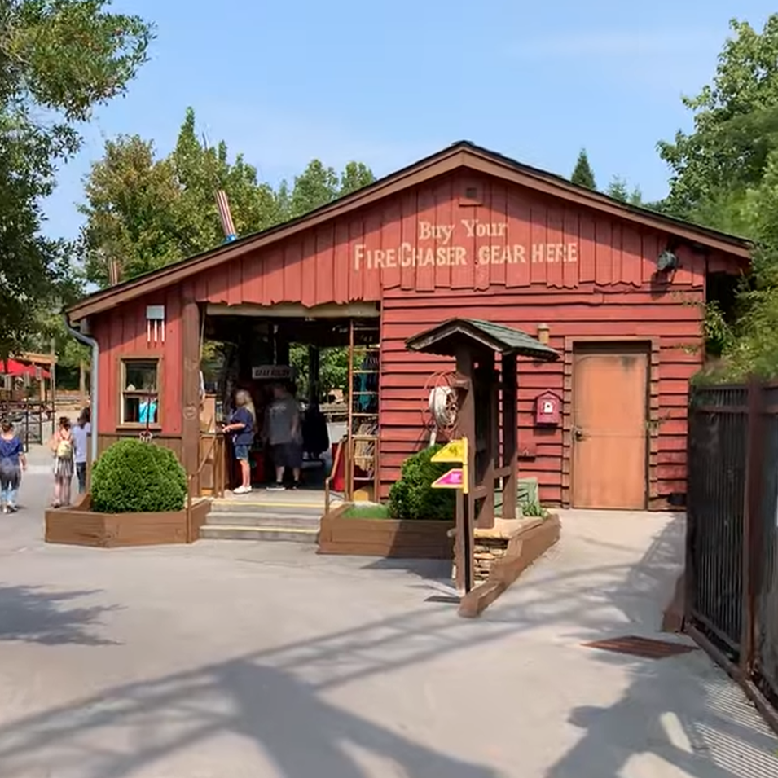
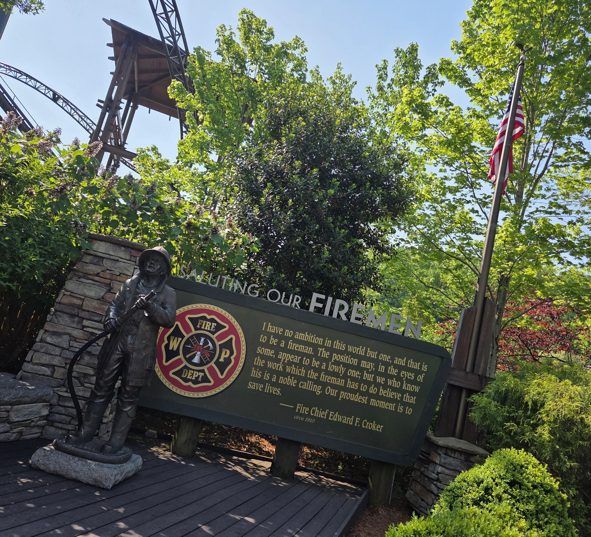
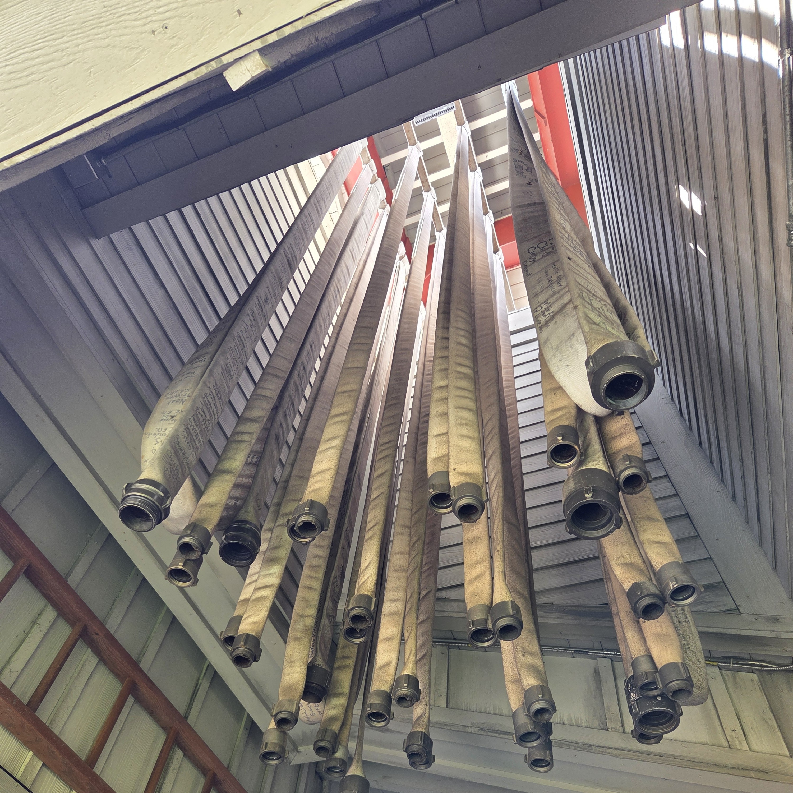
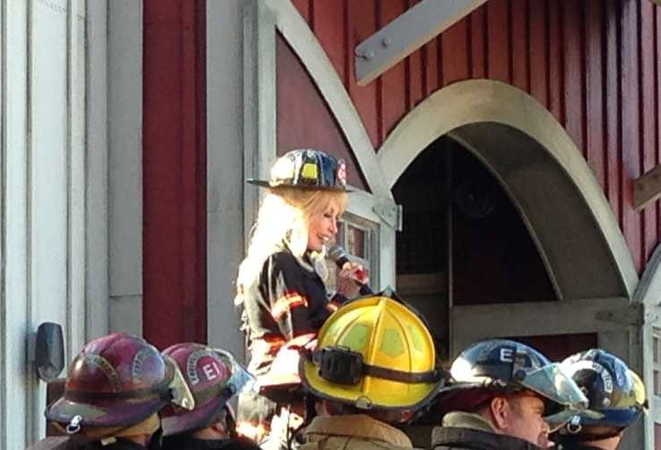
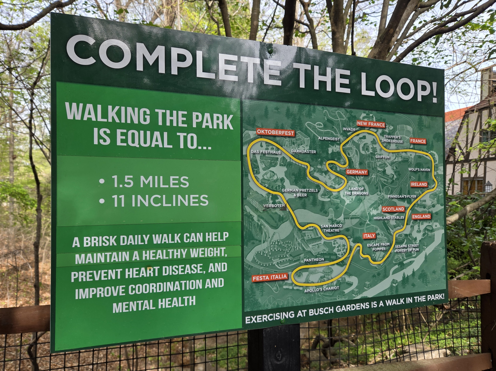
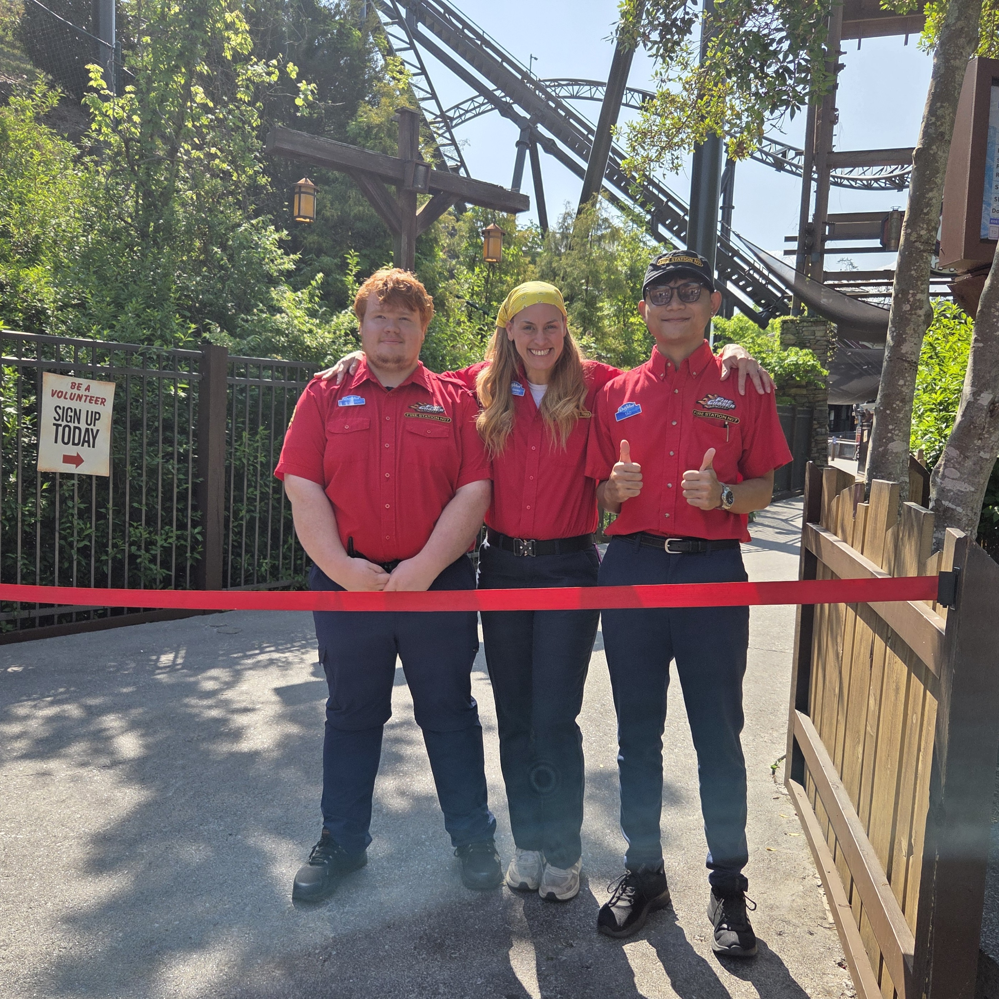

This is an adaptation of an oral presentation I made for a college project.
FireChaser Express at Dollywood is a pretty simple ride, all things considered. The most notable feature about the ride is the backwards portion, speeding out of a shed filled with fireworks back to the safety of the fire station. It’s a solid ride with fun twists and turns, but nothing world-shattering. However, while the ride itself may be simple, its cultural significance to the area is anything but. FireChaser Express glorifies the firefighter career to maintain the Great Smoky Mountains and uphold Appalachian culture through community, and the ride’s theme, architecture, and placement in both the park and the Great Smoky Mountains region support this idea.
The Ride Proper
If you haven’t ridden FireChaser Express, the basic synopsis of the ride is helping the fictitious Volunteer Fire Station 7 deal with “Crazy” Charlie Cherribaum, as his Gas Station and Fireworks Emporium poses a threat to the local landscape. The queue of the ride is filled with firefighter memorabilia and themed symbols, including an old version of a fire truck, fire hoses signed by local firefighters, and patches from fire departments in the surrounding area. All of these symbols prime the audience into feeling like they themselves are firefighters, following orders from Fire Chief Pete Embers and going out on a mission to stop “Crazy” Charlie and save the day. Riding FireChaser Express fills riders with feelings of adrenaline, thrill, and possibly fear, which are similar feelings that real firefighters feel when they’re on a fire truck traveling to an emergency. This idea is also supported by the ride’s gift shop, with the phrase “Buy your FireChaser Gear here” facing riders as they leave the ride. By using the term “gear”, as opposed to merch or toys or fun, audience members stay in the head space that they are firefighters prepping themselves for a mission as they leave the park, like how actual firefighters buy gear to protect themselves and help during emergencies.

Photo Source
The core ideas of firefighting are to protect people and their things, and FireChaser Express’ placement in the park coincides with this. FireChaser Express is in the “Wilderness Pass” area of Dollywood, and the other big coaster in this section is Wild Eagle. Wild Eagle is a very tall ride, and people can see the ride from almost anywhere in Wilderness Pass. As people enter and exit FireChaser Express, they see Wild Eagle and are reminded of this symbol of America (because Wild Eagle is based on the Bald Eagle) that they want to preserve and protect, much like how firefighters want to preserve and protect people and things.
Why be a Firefighter?
We’ve established that FireChaser Express primes people into feeling like they themselves are firefighters - but why? Why be a firefighter? To answer this, we need to look at what being a firefighter means.
1. Sense of Protection and Purpose: As mentioned before, one major aspect of firefighting is the sense of protecting people and things from threats of harm. Just like how the idea of the military is about protecting “us” (the nation) from “them” (other countries), firefighting is about protecting “us” (a community) from “them” (natural and man-made disasters). Ben May, author of the Firefighter Nation article Remembering What We Protect, explains his drive for firefighting with “I read about a seminal series of five public service films by Frank Capra and the Army Signal Corps during World War II: ‘Why We Fight.’ It spoke to the reasons and values of our country, and why winning the war was literally as important as life and death. It is the same for fire and law enforcement: life and death, 24/7. As I thought about the oath and mission of the American fire service, I began to have a better appreciation of not just what we protect, but what that means for who we protect. Certainly, it’s lives and property, but it’s also so much more. Memories and pictures—all personal—and those special rooms and places that can become cinders and ash if we don’t protect them.” Through this sense of protection, of valuing people and the things that they value, a sense of purpose shines through.

2. Sense of Community: By protecting the community, firefighters themselves feel like part of that community. However, a firefighting department can feel like a community in and of itself. Through tackling emergencies, people from different backgrounds and different outlooks come together to achieve a common goal, forging friendships and connections with people they otherwise wouldn’t have. On FireChaser Express, riders from different backgrounds are referred to as a single unit once the trains are loaded, emulating how fire departments (especially volunteer fire departments) form.
3. Sense of Honor & Respect: Firefighting is a “social service job” that exists to serve “your people.” In return, people treat firefighters with honor and respect because of the position. This sense of honor associated with being a firefighter is present throughout FireChaser Express, mainly in the decor. In front of the fire truck in the queue is a sign that reads “Be a HERO. Sign Up Today. Serve your community in times of need”, directly encouraging the audience to become firefighters so that they can be heroes. Deeper in the queue are hoses hung from the ceiling signed by local firefighters, grounding this firefighting environment in reality, and making the decision to become a firefighter more “real.” This display is also another way of showing honor and respect to the position, which may further entice people to join.

Even if riders don’t directly become firefighters, FireChaser Express can encourage riders to give back to their community and help keep their community safe in other ways.
1. Fostering Community Involvement: Fire safety is a community effort. The National Park Service hosts “Smokies Service Days”, where people come together and volunteer to help clean the environment and keep it safe and accessible for community use. Even if people don’t directly volunteer, practicing basic fire safety at home is a small step towards a safe community. A symbol of fire safety you may recognize is Smokey the Bear, and Smokey is also present in FireChaser Express’ queue with his signature “Remember, only YOU can prevent forest fires” quote.
2. Encouraging the Younger Generation: Dollywood describes FireChaser Express as a “family coaster” on their website, and most families who ride FireChaser Express have children. With a height requirement of only 39 inches, FireChaser Express is a ride that is accessible to children typically older than 6. Children being exposed to the job of firefighting and the honor and purpose that comes with it can be encouraged to pursue it as a career or as volunteers when they’re older. For kids who can’t ride FireChase Express, there is also the Firehouse Fun Yard nearby, so they can still be immersed in the firefighting environment, to a lesser degree.
How Does This Relate to Dolly?
After all, FireChaser Express is in Dollywood, of all places. The reason firefighting is so important to Dolly is because of the 2016 wildfires in the Great Smoky Mountains, ravaging throughout her home, figuratively and literally. The fires tore through Sevier County, Gatlinburg, and the Great Smoky Mountains park, and in the end, over 17,000 acres were burned, 2,460 buildings were damaged, and 14 people were killed. After learning about this, Dolly stepped up to the plate and provided her own money to support those affected before raising a single penny. Dolly promised each family that lost a home $1000 a month for 6 months and called it the “My People” fund. The fund gets its name from a Dollywood show of the same name, and also because Dolly “claimed them all as My People — hillbillies, white trash, and all”, according to Graham Hoppe in his paper Icon and Identity.
After donating her own money, Dolly reached out for help in collecting donations. Lodge, a popular cast-iron manufacturer most known for their pans, made a special skillet for the cause and promised that $15 from each skillet bought would go towards Dolly’s foundation. Dolly also hosted a telethon, featuring stars like Kenny Rogers, Chris Stapleton, and Reba McEntire. Other popular names called in to donate to the foundation, like Taylor Swift and Paul Simon. Overall, Dolly’s broadcast raised over $9 million to help support victims of the fires.
Because of this disaster, Dolly was ecstatic to have a ride that’s dedicated to the occupation that helps prevent these disasters. At FireChaser Express’ launch, Dolly wore a rhinestone firefighter uniform and sang “Great Balls of Fire” to the crowd, including firefighters from across the state. During her speech at the opening, she said that “the other thing that’s really special about this ride is that it honors heroes… Course we wanted the kids to know that they can be heroes too.” This quote, and her speech as a whole, details the intentions behind why the ride was built and why Dolly herself is heavily invested in the idea of firefighters being heroes.

Photo Source
The Great Smoky Mountains as a Tourist Attraction
We’ve established why FireChaser Express is in Dollywood, but why is it in the Great Smoky Mountains? Yes, it’s because that’s where Dollywood is, but how exactly does firefighting connect to the Great Smoky Mountains? To answer that, we need to analyze why the Great Smoky Mountains are a tourist attraction in the first place.
1. Feelings of Nostalgia: The Visit My Smokies website, ran by Sevier County’s Tourism Department, describes the Great Smoky Mountains as “Mountains, meadows, forests, rushing streams, clear pools, and cascading waterfalls [that] preserve a vision of America as it once was.” Travelers who visit the Great Smoky Mountains are stunned with nostalgia and fall into a “Tennessee Mountain Trance”, with the natural environment pulling out feelings of safety, warmth, and comfort from each traveler as they reflect on their life and how they got here. Nostalgia is one hell of a drug, as they say.
Nostalgia is also present in other tourist attractions, like Disneyland. Tom Vanderbilt, in his article It's a Mall World After All: Disney, Design, and the American Dream claims that Walt Disney heavily relied on nostalgia when designing the architecture and layout of Disneyland when he says “In harkening back to Main Street, manipulating the landscape, and installing simulated animals, Disney was, as the geographer Yi-Fu Tuan notes, echoing the Renaissance and Baroque nobility who employed the same technical tricks and nostalgia in building their palaces and pleasure gardens. The gardens signified escape, nostalgia, and the preservation of a mythical Eden. They were fantasy lands, as Disney’s parks are fantasy lands.” Nostalgia is often sought out when people travel, so tourist attractions capitalize on that fact.
2. Educational Aspect: People feel content when they learn something new, especially if it's something that they care about. Going on vacation and learning something new can almost justify a trip, as someone would feel good about taking that trip since they gained something (knowledge) that they otherwise wouldn’t have. That’s why vacation spots like Colonial Williamsburg, Washington DC, and national museums are popular, as people go there with the expectation that they’ll learn while they’re relaxing. The Great Smoky Mountains is also one such place. Once again, our friends at Visit My Smokies promote the Great Smoky Mountains as educational since people can “learn a lot about Smoky Mountain history at places like the Walker Sisters Cabin, the Little Greenbrier School, and the Dan Lawson Cabin, as the park is one of the few places in the country to see preserved buildings in the natural settings they were built for.”
3. Natural Views and Physical Activity: Considering that the Great Smoky Mountains are outside, it makes sense that natural views and physical activity are reasons that people visit them. Going outside is seen as a good thing that people should do, so traveling to the great outdoors can justify the trip in and of itself. However, what makes national parks like the Great Smoky Mountains attractive is that they are not always readily accessible. People don’t have national parks in their backyard (unless you live near one, but even then it wouldn’t literally be in your backyard), so because they aren’t always near it, they desire and cherish those natural views. Roderick Nash, in his article The American Invention of National Parks describes the American people’s relationship to wilderness as “having it, being shaped by it and then almost eliminating it - soon provided the strongest reasons for appreciating Yellowstone and the subsequent national parks.” Hell, the reason people push to preserve nature and national parks is because “you don't realize what you have until it's gone”, especially in the context of future generations.
Physical activity is also something people strive to do, and being out in nature encourages this. For tourist attractions that are primarily outside, they can use this fact to draw in people. National parks obviously do this, but another place that utilized this idea was the Atlantic City Boardwalk. In Chapter 1 of Bryant Simon’s book Boardwalk of Dreams, Simon discusses the idea of health and well-being at the boardwalk by quoting “one of Atlantic City’s founders boasted that the resort offered the ‘perfect refuge from the debilitating atmosphere of the growing cities.’ ‘There’s robust health awaiting you at Atlantic City,’ another city leader crowed, ‘but you have to come for a while.’” What’s notable is that this idea of health and well-being in public amusement is still alive, as Busch Gardens Williamsburg encourages people to “Complete the Loop!” while describing the benefits of exercising in their park.

Going back to firefighting, the reason it's so important to the Great Smoky Mountains is because it protects them and ensures that the park can continue being a tourist attraction to support the community. Tourism is what put Pigeon Forge on the map, so the people who live there will do whatever they can to keep their financial stability. The Great Smoky Mountains themselves are what built this community, and so the community, in return, builds a group of people (firefighters) to protect the region and its inhabitants and ensure that the park can continue to support and grow them, like a cycle. How the community builds this group of firefighters is through symbols like FireChaser Express, where this valuable career is glorified and celebrated to entice people to follow that occupation. This is why FireChaser Express is so important to Dollywood and the Greater Smokies region - it is a pivotal piece in maintaining the cycle that allows a community to exist there in the first place.
